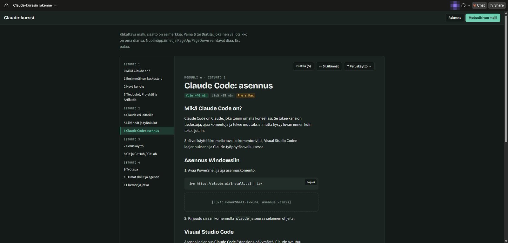

Files, Projects and Artifacts
Files in a conversation
You can attach a file to a message by dragging it into the conversation or with the + button next to the message field. Claude reads text files, PDFs, Office files and images.
| What | Limit (checked 11/2026) |
|---|---|
| File size in a conversation | 500 MB / file |
| Files in a conversation | 20 / conversation |
| up to 1000 pages | |
| File types | for example PDF, DOCX, CSV, TXT, HTML, JSON, XLSX; images JPEG, PNG, GIF, WebP |
A large file uses a lot of the usage limit, and every following message processes it again. Attach only the part you need. The rules from module 0 apply: no credentials, personal data or raw logs.
Projects for recurring work
A Project is a folder for conversations. You attach instructions and files to it, and they are included in every conversation in the Project. You do not have to say the same things every time.
- Instructions: for example "Answer in Finnish. The environment is Windows Server 2022 and PowerShell 5.1. Scripts always with -WhatIf support."
- Files (project knowledge): for example your own runbook template, style examples of ticket replies, the naming convention. Limit 30 MB / file.
- Conversations: every conversation in the Project sees the instructions and files.
Projects are available on the free account too, up to five Projects. A Project's files also save limit, because content that is used repeatedly is counted more lightly.
Optional: Memory in claude.ai
- Memory is on by default on Free, Pro, Max and Ultra accounts on the web, in the desktop app and on mobile. On Team and Enterprise accounts the owners decide whether memory is available.
- The memory switch is under Settings > Your Claude. Pause keeps the memory stored, but Claude does not use it. Reset permanently deletes all memories, including the memories of Projects.
- Every project has its own memory. If you want to keep a project's memory completely separate, turn off Use account memory on the project's page.
- A Project's instructions are a different thing from memory: Claude uses them in all conversations in the Project.
- An Incognito conversation is not saved to memory or to the conversation history.
- Claude Code's memory is its own system, with six levels: Module 7.
Artifacts
An Artifact is a separate output made by Claude that opens next to the conversation: a document, a table, a chart, an HTML page or a small tool. You can edit it by asking for changes, and the versions are kept.
- Available on all plans, including Free.
- Requires that code execution and file creation (Code execution and file creation) is turned on under Settings > Capabilities.
- An Artifact is private at first. You can share it with a link from the Share menu. Anyone with the link can see it without an account, so do not share anything internal.
Good uses: a checklist from a runbook, a table from a CSV, a simple calculator or a memo.

Exercises
1. Clean up a CSV
Save the invented data below as a file called devices.csv and attach it. Ask Claude to make the columns consistent: dates in the form YYYY-MM-DD, operating systems in one spelling, empty locations set to "unknown". Also ask for a PowerShell command that does the same.
Name;OS;Purchased;Location
TT-0012;win 11;3.2.2024;Floor 2
TT-0013;Windows11;2024-02-05;
TT-0014;Windows 10;5/2/2023;floor 3
TT-0015;W10;12.12.2022;Floor 2Show example answer
Name;OS;Purchased;Location
TT-0012;Windows 11;2024-02-03;Floor 2
TT-0013;Windows 11;2024-02-05;unknown
TT-0014;Windows 10;2023-02-05?;Floor 3
TT-0015;Windows 10;2022-12-12;Floor 2A good answer points out that 5/2/2023 is ambiguous (5 February or 2 May) and asks which is meant instead of guessing. The PowerShell solution uses Import-Csv -Delimiter ';', fixes the values and writes a new file with Export-Csv.
2. A Project for runbooks
Create a Project called "Runbooks". In the instructions, write the basics of your environment (without names and addresses) and the runbook structure you want: purpose, prerequisites, steps, verification, rollback. In the Project, ask for a runbook for restarting the DNS service.
Show example answer
Claude follows the Project's structure without asking: the runbook has the same headings as the instructions, and the commands are right for the operating system (for example Restart-Service DNS and verification with Resolve-DnsName). When you open a new conversation in the Project and ask for a second runbook, the structure stays the same.
3. A checklist as an Artifact
Ask Claude to turn the previous runbook into an interactive checklist as an Artifact: a checkbox for each step, and a summary of the completed steps at the end.
Show example answer
An Artifact opens next to the conversation with the steps as checkboxes. You can ask for changes, for example "add a timestamp to each step when it is ticked", and Claude makes a new version. If no Artifact appears, check Settings > Capabilities.
Optional: files and security
- Remove hidden information (author, comments, revision history) from Office files before attaching them.
- A screenshot can show names, addresses or open tabs. Crop the image.
- A Project's files are included in every conversation in it. Keep only what you need in the Project.
- A shared Artifact's link works for anyone. Stop sharing when you no longer need it.